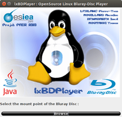
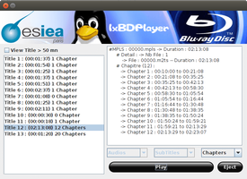

lxBDPlayer
Dieser Artikel wurde für die folgenden Ubuntu-Versionen getestet:
Ubuntu 14.04 Trusty Tahr
Zum Verständnis dieses Artikels sind folgende Seiten hilfreich:
lxBDPlayer 
 ist ein Blu-Ray-Player, welcher auf der Bibliothek DumpHD, MakeMKV und MPlayer basiert. Diese Programmteile dienen zum Auslesen der Inhalte, des Media Key Blocks einer Blu-ray Disk und zur Ausgabe des Videos. Kopiergeschützte Datenträger (AACS / BD+) kann das Programm nicht wiedergeben.
ist ein Blu-Ray-Player, welcher auf der Bibliothek DumpHD, MakeMKV und MPlayer basiert. Diese Programmteile dienen zum Auslesen der Inhalte, des Media Key Blocks einer Blu-ray Disk und zur Ausgabe des Videos. Kopiergeschützte Datenträger (AACS / BD+) kann das Programm nicht wiedergeben.
Entwickelt wurde es von vier Studenten der französischen Hochschule Ecole Supérieure d’Informatique, Electronique, Automatique (ESIEA).
|  |  |
| lxBDPlayer-Startmenü | Titelauswahl |
Voraussetzungen¶
lxBDPlayer basiert auf Java. Wie man eine Laufzeitumgebung (JRE, ab Version 6) installiert, ist im Artikel Java/Installation beschrieben.
Installation¶
Das Programm ist kein Bestandteil der offiziellen Paketquellen. Die Installation muss daher über ein Fremdpaket oder manuell erfolgen.
Fremdpaket¶
Das Programm kann von der Projektseite als deb-Paket heruntergeladen und anschließend installiert [1] werden.
Hinweis!
Fremdpakete können das System gefährden.
Manuell¶
Von SourceForge  das Binär-Archiv herunterladen und entpacken [2]. In den Ordner lxBDPlayer wechseln. In diesem befindet sich die Datei lxBDPlayer.jar, die direkt aufgerufen [3] werden kann. Einen Programmstarter muss man selbst erstellen.
das Binär-Archiv herunterladen und entpacken [2]. In den Ordner lxBDPlayer wechseln. In diesem befindet sich die Datei lxBDPlayer.jar, die direkt aufgerufen [3] werden kann. Einen Programmstarter muss man selbst erstellen.
Hinweis!
Fremdsoftware kann das System gefährden.
Bedienung¶
| lxBDPlayer-Steuerung |
Im Startbildschirm gibt man den Ordnerpfad zur Blu-Ray-Disc oder dem Datenverzeichnis an. Daraufhin erscheint eine Auflistung aller auf der Disk enthaltenen Titel. Hier wählt man den gewünschten Titel aus, auch eine direkte Kapitelangabe ist möglich. Nach Betätigung des Wiedergabe-Buttons startet das Video direkt im Vollbildmodus, dieser kann mithilfe der F -Taste verlassen werden. Die Bedienung erfolgt ausschließlich über Tastenkombinationen oder der mit Grundelementen ausgestatteten Bedienungsleiste im Fenstermodus. Ein OSD-Menü ist nicht vorhanden.
Kommandozeile¶
LxBDPlayer kann über das Terminal [4] gesteuert werden:
| Steuerung | |
| Funktion | Befehl |
| Wiedergabeliste einlesen | lxbdplayer --mpls:00001.mpls '/media/Blu-ray Disc' | mplayer - |
| Kapitel aus einer Liste abspielen. | lxbdplayer --mpls:00001.mpls --chapter:12 '/media/Blu-ray Disc' | mplayer - |
| Info WIedergabeliste | lxbdplayer --mpls:info '/media/Blu-ray Disc' |
| Kapiteldetails | lxbdplayer --mpls:movieonly '/media/Blu-ray Disc' |
| Hilfe aufrufen | lxbdplayer -h |
Tastenkürzel¶
| Tastenkürzel | |
| Taste(n) | Funktion |
| # | Tonspur ändern |
| F | Vollbild |
| D | Frame-dropping einschalten/ausschalten |
| V | Untertitel an/aus |
| J | Untertitelauswahl |
| Y | Untertitelverzögerung erhöhen |
| X | Untertitelverzögerung verringern |
| Pause/Wiedergabe | |
| M | Ton an/aus |
| + | AV-Verzögerung erhöhen |
| ´ | Vorspulen |
| ^ | Zurückspulen |
Erweiterungen¶
Der lxBDPlayer kann mit Plugins erweitert werden. Diese müssen im Ordner /usr/share/lxBDPlayer/plugins vorliegen.
Links¶
Blu-ray Discs mit lxBDPlayer unter Linux abspielen
 - Blogeintrag 06/2010
- Blogeintrag 06/2010Blu-Ray wiedergeben
 Übersichtsartikel
Übersichtsartikel
- Erstellt mit Inyoka
-
 2004 – 2017 ubuntuusers.de • Einige Rechte vorbehalten
2004 – 2017 ubuntuusers.de • Einige Rechte vorbehalten
Lizenz • Kontakt • Datenschutz • Impressum • Serverstatus -
Serverhousing gespendet von